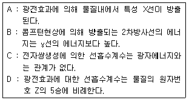

방사선비파괴검사기사 (2015-03-08 기출문제)
1과목: 비파괴검사 개론
1. 비파괴검사의 역할에 대한 설명으로 틀린 것은?
- 제조공정을 합리화할 수 있다.
- 제조원가의 절감이 가능하다.
- 재료의 손실을 줄일 수 있다.
- 결함이 존재하는 재료를 항상 폐기할 수 있다.
(정답률: 88%)

2. 다음 중 방사선투과검사로 검출하기 어려운 결함은?
- 용입부족
- 언더컷
- 기공
- 라미네이션
(정답률: 77%)
3. 다음 중 와전류탐상검사로 검사가 곤란한 것은?
- 페인트의 두께 측정
- 도금의 두께 측정
- 배관용접부 내부의 기공
- 라미네이션
(정답률: 75%)
4. 기체에 방사선이 닿으면 전기적으로 중성이었던 기체의 원자 또는 분자가 이온으로 분리되는 작용은?
- 형광작용
- 사진작용
- 전리작용
- 기상작용
(정답률: 80%)
5. 중성자투과시험(NRT)에서 중성자 선원의 선택 시 고려할 사항에 해당되지 않는 것은?
- 중성자 에너지
- 중성자 가도
- 가속기의 종류
- 선원의 크기와 운반성
(정답률: 50%)
6. 강 속의 망간(Mn) 합금량이 충분하지 못한 경우 1100~1200℃의 고온가공을 받을 때 균열이 발생하는 적열취성(red shortness)의 원인이 되는 원소는?
- S
- P
- Si
- Cu
(정답률: 60%)
7. 단면수축율이 10%이고 원단면적이 20m2인 시편을 최대하중 2000kgf로 인장하였을 때, 파단직전의 단면적은?
- 14m2
- 15m2
- 17m2
- 18m2
(정답률: 40%)
8. 탄소강의 마텐자이트변태에 대한 설명 중 옳은 것은?
- 확산을 수반하는 변태이다.
- 과포화 고용체이다.
- 결정구조는 면심입방결정구조이다.
- 0.6%탄소 이하에서 판상(플레이트) 형태의 마텐자이트가 나타난다.
(정답률: 28%)
9. Cu-Ni 합금이 아닌 것은?
- 알루멜(Alumel)
- 백동(White copper)
- 콘스탄탄(Constantan)
- 모넬메탈(Monel metal)
(정답률: 58%)
10. 강을 열처리할 때 탄소와 반응하여 탄화물을 생성하지 않는 원소는?
- W
- Mo
- Ni
- Cr
(정답률: 28%)
11. 텅스텐계 고속도 공구강에 대한 설명으로 옳은 것은?
- 조성은 18%W-4%Mo-1%V이다.
- 고온에서 결정립 조대화에 기여한다.
- 텅스텐은 마텐자이트에 고용되어 뜨임저항을 감소시킨다.
- W은 일부의 C와 결합하여 W6C를 형성하여 내마모성을 높인다.
(정답률: 60%)
12. 합금의 조직 미세화 처리 목적으로 용융금속에 금속나트륨을 첨가한 합금계는?
- Cu-Zn 계
- Cu-Ni 계
- Al-Si계
- Zb-Al-Cu 계
(정답률: 56%)
13. 금속초미립자의 특성으로 옳은 것은?
- 금속초미립자의 융점은 금속덩어리보다 낮다.
- 저온에서 열저항이 매우 커서 열의 부도체이다.
- 활성이 약하여 화학반응을 일으키지 않는다.
- Fe 계 합금초미립자는 금속덩어리보다 자성이 약하다.
(정답률: 69%)
14. Fe-C 평형상태도에서 존재하지 않는 불변 반응은?
- 공정반응
- 공석반응
- 포정반응
- 포석반응
(정답률: 48%)
15. 구상흑연주철 제조에 첨가되는 흑연구상화제가 아닌 것은?
- Sn계 합금
- Mg계 합금
- Si계 합금
- Ca계 합금
(정답률: 27%)
16. 강의 용착 금속 결합 중 온점(Fish eye) 발생의 가장 큰 원인이 되는 가스로 가장 적합한 것은?
- O2
- N2
- CO2
- H2
(정답률: 50%)
17. 다음 중 금속원자가 상온에서 원자간의 인력에 의해 접합할 수 있는 거리로 옳은 것은?
- 10-7cm
- 10-8cm
- 10-9cm
- 10-10cm
(정답률: 40%)
18. 용접부에 생기는 결함 중 구조상의 결함이 아닌 것은?
- 변형
- 표면 결함
- 기공
- 슬래그 섞임
(정답률: 47%)
19. 정격 2차 전류가 300A, 정격 사용율이 40%인 아크 용접기에서 200A로 용접시의 허용사용율(%)은?
- 40
- 60
- 90
- 100
(정답률: 50%)
20. 직류 아크 용접기의 극성에서 정극성과 비교한 역극성의 설명으로 올바른 것은?
- 용접봉을 음극에 연결한다.
- 모재의 용입이 깊다.
- 용접봉의 융용속도가 빠르다.
- 비드의 폭이 좁다.
(정답률: 52%)
2과목: 방사선투과검사 원리
21. 방사선투과사진 음영형성의 기하학적 원리에 대한 설명으로 옳은 것은?
- 선원과 시험체간 거리는 가능한 한 작아야 한다.
- 투과되는 방사선과 시험체의 표면은 가능한 한 수직이 되어야 한다.
- 선원의 초점크기는 음영형성의 기하학적 원리와 관계가 없다.
- 필름과 시험체간 거리는 가능한 한 멀어야 한다.
(정답률: 75%)
22. 다중필름 기법을 적용하기 위해 속도가 다른 2가지 필름을 선택하고자 할 때 특성 곡선상에서 다음 어떤 조건을 만족하여야 하는가?
- 농도(density) 축에서 약간 겹쳐(overlap)야 한다.
- 농도(density) 축에서 겹쳐서는 안된다.
- 로그 상대노출(log E) 축에서 약간 겹쳐(overlap)야 한다.
- 로그 상대노출(log E) 축에서 겹쳐서는 안된다.
(정답률: 60%)
23. X선관의 표적 재질로 텅스텐을 주로 사용하는 이유는?
- 융점이 낮기 때문이다.
- 큐리온도가 높기 때문이다.
- X선의 발생효율은 표적 재질의 원자번호에 비례하기 때문이다.
- X선의 발생효율은 표적 재질의 원자번호에 반비례하기 때문이다.
(정답률: 53%)
24. 필름 뱃지에 대한 설명으로 틀린 것은 ?
- 방향에 대한 의존성이 있다.
- 금속필터를 사용하여 입사방사선의 에너지를 결정한다.
- 선량 측정범위가 TLD보다 넓고 정확하다.
- 잠상퇴행 현상으로 감도의 변화가 발생하다.
(정답률: 56%)
25. 시편의 선원 쪽에 존재하는 불연속이 투과 사진상에 명확하게 나타나지 않았다. 이는 어떤 경우인가?
- 시편의 두께가 두꺼운 경우
- 초점의 크기가 감소한 경우
- 선원과 시편간 거리가 증가한 경우
- 시편의 두께가 얇은 경우
(정답률: 58%)
26. 방사성 동위원소의 측정에 사용되는 용어의 설명으로 틀린 것은?
- 큐리(Ci)는 방사능의 강도를 나타내는 단위로, 라듐 1g의 방사능 1Ci이다.
- 반감기(half- life)는 방사선 강도를 처음 값의 반으로 줄이는데 필요한 물질의 두께를 말한다.
- 비방사능은 방사성 동위원소를 포함하고 있는 물질의 단위 질량당의 방사능을 말한다.
- 방사능의 강도는 SI단위로 Bq가 사용되며, 1Bq는 1dps이다.
(정답률: 71%)
27. 파동이면서 입자의 성질을 나타내는 식으로 올바른 것은? (단, E는 에너지, h는 프랑크상수, v는 진동수, m은 질량, c는 광속도, a는 원자번호를 나타낸다.)
- E=hv
- E=mv
- E=ma
- E=mc
(정답률: 68%)
28. 방사선투과검사 후 현상처리 된 필름의 보관에 관한 설명으로 틀린 것은?
- 현상된 필름은 저장용 봉투를 만드는데 사용된 접착제에 의한 화학오염의 가능성을 방지하기 위하여 본래의 필름 포장함에 넣어 보관한다.
- 각각의 필름이 간지에 쌓여 있더라도 여러 장의 필름을 하나의 봉투에 넣어 보관해선 안 된다.
- 온도와 습도가 자주 변하는 곳은 피한다.
- 화학증기 및 가시광선이 존재하는 곳은 피한다.
(정답률: 62%)
29. 방사성 동위원소가 붕괴할 때 핵으로부터 나오는 방사선이 아닌 것은?
- 알바(α)입자
- 베타(ß)입자
- X선
- 감마(γ)선
(정답률: 75%)
30. 투과사진에서 반음영이 작고 좋은 식별도를 얻기 위한 원칙적인 기하학적 조건을 설명한 것으로 틀린 것은?
- 소초점의 X선 장치를 사용한다.
- 필름을 검사체에 밀착시킨다.
- 초점과 검사체간의 거리를 짧게 한다.
- 초점을 검사체의 수직 중심선상에 놓는다.
(정답률: 70%)
31. 방사선 투과사진 콘트라스트에 영향을 미치는 인자는 여러 가지가 있다. 이 중에서 사용한 방사선의 선질에 의해 결정되는 것은?
- 흡수계수
- 필름 콘트라스트
- 기하학적 보정계수
- 결함의 높이
(정답률: 59%)
32. 아래 내용이 옳은 것끼리 묶여진 것은?

- A, C
- B, D
- A, D
- B, C
(정답률: 52%)
33. 공업용 방사선투과검사에 사용되는 X선 노출표를 설명한 것으로 종축을 노출량, 횡축을 시험체의 두께로 나타내고, 전압에 따라 직선적으로 나타내었을 때 바른 설명은?
- 전압이 클수록 기울기가 급경사가 된다.
- 전압이 낮을수록 기울기가 커진다.
- 전압 크기에 관계없이 횡축에 평행하다.
- 전압 크기와 무관하게 종축에 평행하다.
(정답률: 46%)
34. 선원과 시험체간 거리가 125cm, 시험체와 필름까지의 거리가 8cm, 선원의 크기가 0.5cm 라면 기하학적 불선명도(반영)의 크기는?
- 0.011cm
- 0.032cm
- 0.128cm
- 0.782cm
(정답률: 75%)
35. X선 장비로 방사선투과시험시 투과사진 콘트라스트를 좋게하기 위하여 무엇을 조정하는 것이 좋은가?
- 전압을 올린다.
- 전류를 올린다.
- 노출시간을 증가시킨다.
- 전압을 낮춘다.
(정답률: 56%)
36. 다음 중 Cs-137의 반감기로 옳은 것은?
- 약 5.3년
- 약 30년
- 약 75일
- 약 127일
(정답률: 50%)
37. 방사성 동위원소의 강도가 20μCi 라면 Bq로 환산한 값은 얼마인가?
- 74kBq
- 740kBq
- 74MBq
- 740MBq
(정답률: 62%)
38. 원자번호가 낮은 알루미늄 시험체에 에너지, 0.5MeV의 엑스선을 조사했을 때 발생하는 주된 감쇠 과정은?
- 광전효과
- 콤프턴 산란
- 전자쌍 생성
- 엑스선 회절
(정답률: 40%)
39. Ir-192 점선원으로부터 5m 거리에 있는 작업종사자가 받는 피폭 방사선량이 1R/h이다. 작업종사자의 피폭방사선량을 20mR/h 이하로 하려면 철 차폐벽의 두께는 약 얼마이어야 하는가? (단, 철의 선형흡수계수는 0.046mm-1이다.)
- 40mm
- 55mm
- 70mm
- 85mm
(정답률: 44%)
40. 필름 입상성(Grainniness)에 대한 설명으로 옳은 것은?
- 조사시간이 길고 증감계수가 증가 할수록 입상성은 증가한다.
- 필름 속도와 방사선에너지의 증가에 따라 입상성은 증가한다.
- 방사능 강도(Ci)가 높고 현상시간이 길수록 입상성은 증가한다.
- 필름 속도가 낮고 방사선량이 증가 할수록 입상성은 증가한다.
(정답률: 34%)
3과목: 방사선투과검사 시험
41. 방사선투과사진의 판독가능 여부는 여러 조건을 만족해야만 사진을 올바르게 판독할 수 있다. 다음 중 판독조건에 포함될 사항으로 가장 거리가 먼 것은?
- 사진농도
- 결함의 깊이
- 계조계의 값
- 투과도계의 식별 최소 선경
(정답률: 71%)
42. 다음 중 이동방사선투과검사법에 해당되지 않는 것은?
- 회전촬영법
- 컴퓨터단층촬영법(CT)
- 주사법
- 미시방사선투과검사법
(정답률: 42%)
43. 촬영된 투과사진은 검사체의 어떤 부분을 언제 촬영했는지등 여러 가지 필요한 사항을 알 수 있도록 하고 있는데, 다음 중 이러한 정보를 주는 것은?
- 투과도계
- 계조계
- 필름마커
- 마그네틱 처크
(정답률: 83%)
44. 상질 및 감도 측면에서는 열등하지만, 조작이 간편하며 암실작업이 불필요한 건식의 물리적 현상법을 사용하는 방사선 투과검사법은?
- X선 회절법
- 제로래디오그래피
- 미시방사선투과검사법
- 전자방사선투과검사법
(정답률: 40%)
45. 필름의 현상과정에 나타난 불량상태에 대한 원인을 설명한 것으로 틀린 것은?
- 미세한 반점이 나타나는 것은 필름의 유효기간이 지났기 때문이다.
- 노란 얼룩이 생긴 것은 정착액의 성능이 감소되었기 때문이다.
- 초승달 모양으로 하얗게 나타나는 것은 노출 후에 필름이 꺾인 현상이다.
- 필름이 느슨해진 것은 정착액의 온도가 높거나 성능이 감소되었기 때문이다.
(정답률: 50%)
46. 방사선을 이용한 두께측정 방법을 설명한 내용으로 틀린 것은?
- 측정하고자 하는 부분에 동일 재질의 스텝웨지(step wedge)를 놓고 동시에 촬영하는 방법이다.
- 스텝웨지(step wedge)를 측정하고자하는 부위에 밀착시켜 주변과의 방사선 강도차에 의한 오차를 줄여야 한다.
- 필름의 농도와 웨지의 두께를 대응하는 곡선을 그려 시험체의 농도를 비교하여 두께를 측정한다.
- 사용전압은 가능한한 높게 하여 관용도를 증가시켜 여러범위의 두께를 측정할 수 있게 한다.
(정답률: 50%)
47. 적합한 투과사진 관찰조건에서 식별한계 콘트라스트(△D min)가 작아야 결함을 식별하기 쉽다. 다음 중 △D min 과 관련 없는 인자는?
- 상이 크기
- 필름의 입상성
- 투과사진의 농도
- 선원의 초점 크기
(정답률: 16%)
48. X선관에서 초점(Focal spot)의 크기가 가능한 한 작야아 하는 이유는?
- 투과력을 증대시키기 위해
- 콘트라스트를 줄이기 위해
- 영상의 섬세도를 증대시키기 위해
- 필름의 흑화도를 증대시키기 위해
(정답률: 48%)
49. 거리 3m, 5mA에 4분의 노출시간으로 얻은 사진과 동일한 사진을 얻으려면 거리 3m, 2mA의 조건에서 시간은 얼마가 요구되는가?
- 5분
- 10분
- 20분
- 40분
(정답률: 73%)
50. 방사선투과필름의 취급시 정전기(static electricity)현상을 줄이기 위한 암실의 상대습도로 적절한 것은?
- 15%미만
- 15~35%
- 40~60%
- 60~80%
(정답률: 43%)
51. 전자가 빠른 속도 물질과 충돌하면 매우 짧은 파장을 가진 전자파 방사선이 생기는데 이것을 무엇이라 하는가?
- X선
- β선
- γ선
- 중성자
(정답률: 80%)
52. 방사선투과사진 촬영시 50mm 이하의 철강재료일 경우 요구되는 불선명도(Ug)가 0.5mm라면, 지름 300mm, 두께 35mm의 배관 용접부를 단벽단상으로 촬영하고자 한다. 선원의 크기가 2mm라면 선원-필름간의 최소거리는 얼마이어야 하는가?
- 70mm
- 87.5mm
- 140mm
- 175mm
(정답률: 32%)
53. 다음 중 투과도계의 사용목적을 바르게 설명한 것은?
- 검출된 균열과 기공 등 결함의 크기를 결정하기 위해서 사용된다.
- 방사선투과검사 절차를 간소화시키기 위해서 사용된다.
- 방사선투과사진의 농도의 적정성을 결정하기 위해서 사용된다.
- 방사선투과검사 기법의 적정성을 점검하기 위해서 사용된다.
(정답률: 58%)
54. X선 발생장치 구성회로의 설명으로 틀린 것은?
- 필라멘트 회로는 가열용 변압기로 전원 전압을 감압시킨다.
- 타이머 회로는 고전압 변압기의 2차측 회로를 차단하여 X선 발생을 정지시킨다.
- 고전압 회로는 X선관의 양극에 고전압을 공급한다.
- 온도 릴레이 회로는 일정 온도이상일 때 X선관의 동작을 정지시킨다.
(정답률: 57%)
55. X선 개폐기가 작동되지 않는 원인에 대한 설명으로 틀린 것은?
- 온도 릴레이 회로의 불량
- 타이머가 동작상태로 되어 있지 않다.
- 절연유의 온도가 상승되어 있다.
- X선관이 불량하다.
(정답률: 33%)
56. 미소 방사선투과(Micro-radiography) 촬영법에서 시편과 필름을 아주 잘 밀착시킴으로써 필름이 허용하는 한 최대확대율을 얻을 수 있도록 밀착하는 가장 좋은 도구는?
- 지그
- 카셋트
- 밴드
- 진공노출홀더
(정답률: 48%)
57. 필름 관찰에 사용되는 휴대용 농도계(densitometer)의 취급시 주의하여야 할 사항으로 틀린 것은?
- 농도계의 교정은 사진농도 표준필름으로 행한다.
- 영점 조절은 필름이 없이 필름 판독기에 직접 대고 행한다.
- 투과사진의 농도측정 전·후에 영점 측정을 확인하는 것이 좋다.
- 필름의 농도측정은 농도계를 이동하며 측정하는 것이 이상적이다.
(정답률: 67%)
58. 결함의 형상이 벌레집과 같은 형태로 웜홀(warm hole)이라고 부르는 이 결함은?
- 용입불량
- 파이프
- 슬래그개재
- 미스런
(정답률: 49%)
59. 구비할 조건을 충분히 만족한 경우에도 관찰조건이 적정하지 않으면 투과사진의 판단에 오류를 범할 수 있다. 다음 중 관찰조건에 영향을 미치는 인자로 가장 거리가 먼 것은?
- 관찰실의 밝기
- 관찰자의 시력
- 필름관찰기의 밝기
- 투과도계의 실별한계 콘트라스트
(정답률: 57%)
60. X선 발생장치의 사용시 예열이 필요한 이유가 아닌 것은?
- 고전압 발생자이의 과부하를 막기 위해
- X선관의 수명을 늘이기 위해
- 양극의 과열을 막기 위해
- 방사선 조사시간을 단축하기 위해
(정답률: 74%)
4과목: 방사선투과검사 규격
61. 다음 차폐재 중 동일한 방사선에 대해서 가장 얇은 두께로서 차폐효과를 올릴 수 있는 것은?
- 우라늄
- 납
- 철
- 콘크리트
(정답률: 25%)
62. 투과사진을 판정할 때 합격기준을 목적으로 하는 규격에 관한 설명이 잘못된 것은?
- 결함 표준도와 비교한다.
- 표준사진과 비교한다.
- 결함점수로 등급분류한다.
- 촬영방법을 제시한다.
(정답률: 78%)
63. 40Ci 인 Ir-192 선원이 창작된 γ선 조사기 1대를 운반할 때, 외부표면 임의점에서의 최대 방사선량률이 0.6 mSv/h이고, 운반지수가 2.5 이었다. 이 때 운반표지를 부착한다면 어떤 등급으로 해야 하는가?
- 제1종 백색운반물
- 제2종 청색운반물
- 제3종 황색운반물
- 전용운반물
(정답률: 53%)
64. 다음 방사선 장해의 정도에 영향을 미치는 여러 가지인자 중 조사(照査)조건에 해당하는 것은?
- 선질
- 성별
- 온도
- 연령
(정답률: 71%)
65. 주강품의 방사선 투과 시험방법(KS D 0227)에 따라 결함이 1개인 경우 결함치수와 결함점수와의 관계가 잘못 연결된 것은?
- 2.0mm이하-1점
- 2.5mm-2점
- 5.0mm-2점
- 8.0mm-5점
(정답률: 88%)
66. 보일러 및 압력용기에 대한 표준방사선투과검사(ASME Sec. V, Art.22 SE-1025)에 따라 유공형 투과도계를 사용하여 투과검사를 수행 중이다. 투과사진의 감도 레벨이 2-2T로 요구될 때, 50 mm 인 강재에 대한 투과도계의 두께는?
- 1mm
- 2mm
- 3mm
- 4mm
(정답률: 25%)
67. 강 용접 이음부의 방사선투과 시험방법(KS B 0845)에서 결함의 종류 중 2종 결함부의 응렬집중이 용접이음부의 강도를 저하시키는 것으로 판단되는 것 이다. 다음 중 이에 해당되지 않는 것은?
- 둥근 블로홀
- 융합불량
- 용입불량
- 파이프
(정답률: 53%)
68. 원자력안전법 시행령에서 구정하고 있는 방사선 작업종사자에 대한 연간 유효선량한도는 얼마인가?
- 50mSv
- 150mSv
- 50Sv
- 150Sv
(정답률: 75%)
69. 방사선 투과검사시 방사선으로부터의 피폭을 줄일 수 있는 방법이 아닌 것은?
- 가급적 노출시간을 줄인다.
- 선원에 콜리메터를 제거한다.
- 선원으로부터 멀리 떨어진다.
- Ci 수가 낮은 선원을 사용한다.
(정답률: 64%)
70. X선이나 감마선에 의해 공기중에 이온화된 양을 말하며 건조한 공기 1kg 중 2.58×10-4 C/kg 이온전하를 만드는 선량을 무엇이라 하는가?
- 흡수선량
- 조사선량
- 등가선량
- 유효선량
(정답률: 80%)
71. 스테인리스강 용접부의 방사선투과 시험방법 및 투과사진의 등급 분류 방법(KS D 0237)에 대하여 규정하고 있다. 결함의 종류를 나누는데 있어서 텅스텐 혼입은 결함 제 몇 종으로 분류하는가?
- 제1종
- 제2종
- 제3종
- 제4종
(정답률: 67%)
72. 원자력안전법 시행령에서 규정하고 있는 일반인에 대한 연간 유효선량한도는 얼마인가?
- 1밀리시버트
- 10밀리시버트
- 100밀리시버트
- 1000밀리시버트
(정답률: 79%)
73. 스테인리스강 용접부의 방사선 투과시험시 투과도계 S01의 가장 가는 선이 식별되어 투과도계 식별도가 2%가 되었다면 재료두깨는?
- 2.5mm
- 5mm
- 7.5mm
- 10mm
(정답률: 48%)
74. 원자력안전법에 의한 수시출입자의 손 발 및 피부에 대한 연간 등가선량한도(mSv)로 옳은 것은?
- 300
- 150
- 100
- 50
(정답률: 48%)
75. 강 용접 이음부의 방사선 투과시험방법(KS V 0845)에 따라 강판 맞대기 용접부에 대한 검사를 실시할 때 A급의 상질을 요구하는 경우 투과사진의 농도범위로 옳은 것은?
- 1.3 이상 4.0 이하
- 1.5 이상 3.8 이하
- 1.8 이상 4.0 이하
- 2.0 이상 4.2 이하
(정답률: 27%)
76. 원자력안전법 시행령에서 규정하고 있는 방사선구역 수시출입자의 수정체에 대한 연간 등가선량한도는?
- 15mSv
- 30mSv
- 50mSv
- 120mSv
(정답률: 55%)
77. 방사선투과검사 장치의 사용 전 검사 항목이 아닌 것은?
- 선원용기 점검
- 운반차량 점검
- 안전장치 점검
- 선원저장기구 점검
(정답률: 77%)
78. 보일러 및 입력용기에 대한 방사선투과검사(ASME Sec. V, Art.2)에서 두께가 12.7 mm인 강을 방사선 투과검사시 사용되는 유공형 투과도계는 17번이다. 2T홀(hole)이 나타났다고 했을 때 이에 해당하는 강도는?
- 2-1T
- 2-2T
- 2-4T
- 1-2T
(정답률: 30%)
79. 보일러 및 압력용기에 대한 방사선투과검사(ASME Sec. V, Art.2)에서 사진농도를 측정하기 위해 스텝웨지 비교필름(film'Strip)을 사용하도록 요구하고 있다. 이 스텝웨지 비교필름의 최대 확인 점검주기는?
- 3개월
- 6개월
- 9개월
- 1년
(정답률: 50%)
80. 보일러 및 압력용기에 대한 방사선투과검사(ASME Sec. V, Art.2)에서 투과사진 상에 농도 변화가 어느 범위 이상이면 추가로 상질계를 배치하고 재촬영하여야 하는가?
- 지정된 농도보다 -15% 또는 30% 이상으로 변화한 경우
- 지정된 농도보다 -10% 또는 30% 이상으로 변화한 경우
- 지정된 농도보다 -5% 또는 25% 이상으로 변화한 경우
- 지정된 농도보다 -10% 또는 35% 이상으로 변화한 경우
(정답률: 63%)